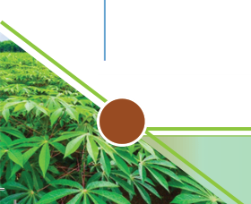

Post-harvesting management
Cassava tubers should be processed or consumed relatively quickly after
harvesting, as they can spoil rapidly. If not used immediately, store them in a
cool, dry, well-ventilated place. For extended storage, cassava can be processed
into flour, chips, or other products. Tubers can also be peeled, sliced, and dried in
the sun or using a mechanical dryer. Alternatively, cassava can be fermented to
produce more extended shelf-life products.
Marketing cassava
Marketing cassava can involves different strategies to ensure it effectively reaches
the target market. Some of these strategies include:
(i) Identifying the target market: Local consumers or companies that use
cassava for products like starch, flour, and animal feed.
(ii) Diversifying product: Process cassava into products such as cassava flour
and cassava chips.
(iii) Branding and packaging: Develop a strong, recognisable brand. Invest
in attractive, informative, and sustainable packaging that appeals to
consumers.
(iv) Identifying marketing channels: Use social media and a dedicated website
to reach a wider audience. Place your products in supermarkets and
speciality food shops, and partner with wholesalers to distribute your
products to various retail outlets.
(v) Promotion strategies: Use traditional media (TV, radio) and digital
marketing (social media). It is advisable to offer sales discounts and special
offers to attract and retain customers.
Activity 3.6
1. Visit the nearby market to assess the following on cassava and cassava
products.
(a) Where does the cassava produce come from?
(b) Identify the cassava products found in the market.
(c) Identify the price of cassava produce and its products.
(d) Ask how cassava is stored to increase its shelf life and how long it takes
to deteriorate.
(e) Summarise your observations in your portfolio.